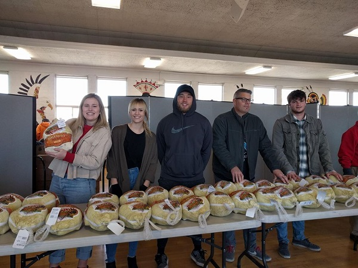
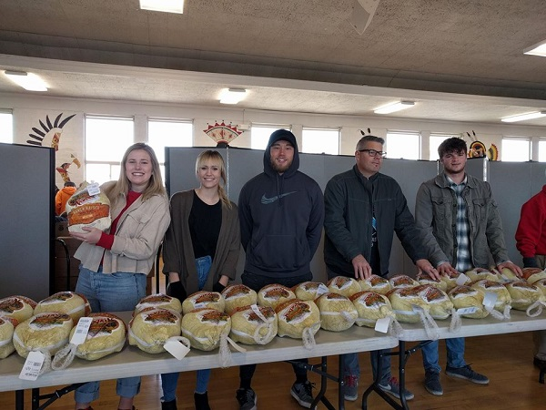

Donate Food
 


Our food pantry is the busiest in Utah. Each year, we distribute tens of thousands of pounds of food donated by groups and individuals. We depend on your generosity to meet the high demand for emergency food.
Any nonperishable foods or small amounts of perishable foods can always be used.
Please call 801-364-7765 to find out what we need most. Thank you!
Emergency Food Pantry
347 South 400 East
Salt Lake City, UT 84111
801-364-7765
1-888-747-8482 (toll-free)
Monday through Friday, 9 a.m. - 5 p.m.
Donate Clothing
The Thrift Store thrives thanks to your generous donations. Please make sure all items are clean and in working order, used clothing has no rips/stains, and underwear is new.

We Welcome:
- Children's clothing
- Women's clothing, especially large sizes
- Men's clothing
- Shoes, work boots, and socks
- Jackets and coats
- Underwear (new)
- Jeans and work pants
- Blankets, towels, and sheets
- Dishes and silverware
- Pots, pans, and crock pots
- Small appliances
- Household goods
We do NOT Accept:
Help Crossroads Urban Center When You Shop
There are now several easy, free, ways to sign up for programs that give money to charitable organizations like Crossroads Urban Center every time you shop, either on-line or in person.